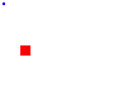
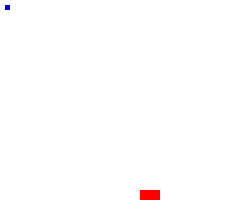
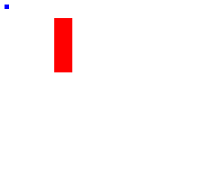
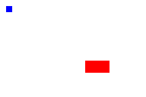

显式参考PNG

左为transform-origin实际PNG，右为等价translate/rotate/translate参考。


<svg xmlns="http://www.w3.org/2000/svg" width="240" height="200" viewBox="0 0 240 200"><rect x="110" y="160" width="20" height="20" fill="red" transform-origin="center bottom" transform="rotate(90)"/><rect x="5" y="5" width="5" height="5" fill="blue"/></svg>
<svg xmlns="http://www.w3.org/2000/svg" width="240" height="160" viewBox="10 20 120 80"><rect x="30" y="40" width="20" height="10" fill="red" transform-origin="50% 50%" transform="rotate(180)"/><rect x="5" y="5" width="5" height="5" fill="blue"/></svg>

<svg xmlns="http://www.w3.org/2000/svg" width="240" height="200" viewBox="0 0 240 200"><rect x="40" y="40" width="60" height="20" fill="red" transform-origin="50% 50%" transform-box="fill-box" transform="rotate(90)"/><rect x="5" y="5" width="5" height="5" fill="blue"/></svg>


<svg xmlns="http://www.w3.org/2000/svg" width="240" height="200" viewBox="0 0 240 200"><rect x="40" y="40" width="60" height="20" fill="red" transform-origin="70 50" transform="rotate(90)"/><rect x="5" y="5" width="5" height="5" fill="blue"/></svg>


<svg xmlns="http://www.w3.org/2000/svg" width="240" height="160" viewBox="0 0 120 80"><rect x="30" y="20" width="20" height="10" fill="red" transform-origin="50% 50%" transform="rotate(180)"/><rect x="5" y="5" width="5" height="5" fill="blue"/></svg>
{
"source": "/Users/lichao/Desktop/xpert/user-feedback/runs/replay-recovery-20261118/recover-20261118-12582-transform-origin/local-frozen-source/cairosvg/__init__.py",
"tests": 5,
"passed": 3,
"failed": 2,
"checks": [
{
"name": "center-bottom",
"expected_origin": [
120,
200
],
"changed_pixels": 600,
"passed": false
},
{
"name": "nonzero-viewbox-percent",
"expected_origin": [
70,
60
],
"changed_pixels": 1600,
"passed": false
},
{
"name": "fillbox-center",
"expected_origin": [
70,
50
],
"changed_pixels": 0,
"passed": true
},
{
"name": "explicit-length",
"expected_origin": [
70,
50
],
"changed_pixels": 0,
"passed": true
},
{
"name": "zero-viewbox-percent",
"expected_origin": [
60,
40
],
"changed_pixels": 0,
"passed": true
}
]
}